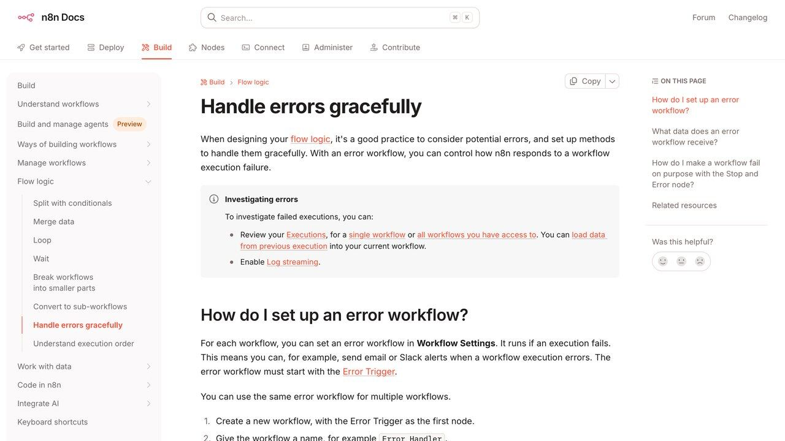

La mayoría de frustraciones con la automatización por IA no vienen de que la tecnología falle, vienen de cómo se plantea la tarea desde el principio. Estos son los fallos que más se repiten, y son fáciles de evitar una vez que los conoces.
NO ERES TÚ SOLO
Un informe de RAND Corporation de 2024, basado en entrevistas a profesionales, recoge que "según algunas estimaciones" más del 80 % de los proyectos de IA fracasan, y señala como causa más frecuente que los implicados no entienden o no comunican bien qué problema hay que resolver (informe de RAND). Es una estimación, no una medición exacta, pero coincide con lo que vemos: la causa casi nunca es que "la IA no funcione" — casi siempre es falta de claridad sobre qué problema concreto se quería resolver antes de automatizarlo. Esta lista cubre las versiones a pequeña escala de esos mismos errores.
Los nueve errores, uno a uno
Automatizar algo que todavía no dominas manualmente
Si no tienes claro exactamente cómo se hace una tarea paso a paso, tampoco vas a poder explicársela bien a un agente. Antes de automatizar, escribe (aunque sea mentalmente) el proceso completo tal como lo harías tú mismo.
Cómo se ve en la práctica: alguien pide "automatiza la clasificación de facturas" sin saber él mismo qué reglas usa para decidir si una factura es urgente o no — simplemente "lo sabe cuando lo ve". Ese conocimiento tácito no explicado es exactamente lo que el agente necesita para acertar, y sin él, adivina con sus propios criterios, casi siempre distintos a los tuyos.
Cómo evitarlo: antes de escribir la instrucción, haz el proceso a mano tres o cuatro veces prestando atención consciente a qué miras primero, qué descartas y por qué. Esas reglas informales son las que hay que poner por escrito.
No revisar los primeros resultados
El error más caro: dejar que una automatización nueva corra sin supervisión desde el primer día. Los primeros ciclos hay que revisarlos de cerca, porque es cuando aparecen los casos límite que no habías previsto.
Cómo se ve en la práctica: una automatización que clasifica correos funciona bien en las pruebas con cinco ejemplos, se activa a plena producción, y dos semanas después alguien descubre que llevaba todo ese tiempo marcando como "spam" los correos de un cliente concreto por una coincidencia de palabras que nadie previó.
Cómo evitarlo: define de antemano un periodo de "supervisión activa" (una o dos semanas) donde revisas cada resultado, no solo una muestra. Solo cuando ese periodo pasa sin sorpresas relajas la supervisión a revisiones puntuales.
Dar por hecho que "una vez funciona" significa "siempre va a funcionar"
Una automatización puede funcionar perfecto con los datos de hoy y fallar la semana que viene si cambia el formato de entrada, la fuente de datos, o aparece un caso que no se probó. Revisar de vez en cuando, no solo al principio, evita sorpresas.
Cómo se ve en la práctica: un proveedor cambia el formato de sus facturas en PDF (mueve el número de factura de arriba a abajo) y la automatización que llevaba meses funcionando de repente empieza a fallar en silencio, sin que nadie se entere hasta que se nota un hueco en la contabilidad del mes.
Cómo evitarlo: añade una comprobación periódica programada (aunque sea mensual) donde alguien revisa una muestra de resultados recientes, no solo confía en que "como llevaba tiempo bien, sigue bien".
Regla práctica: cuanto más dinero, datos sensibles o consecuencias irreversibles tenga una tarea, más supervisión humana necesita, aunque esté automatizada.
Pedir demasiado en una sola instrucción
Automatizaciones que intentan resolver diez cosas a la vez son más frágiles y más difíciles de depurar cuando algo falla. Dividir en tareas más pequeñas y encadenarlas es más lento de montar pero mucho más fácil de arreglar cuando un paso concreto no funciona.
Cómo se ve en la práctica: una única instrucción que dice "lee el correo, clasifícalo, redacta una respuesta, actualiza la hoja de cálculo y notifica al equipo" falla en algún punto intermedio y no hay forma clara de saber cuál de los cinco pasos fue el que salió mal, porque todo ocurrió dentro de la misma caja negra.
Cómo evitarlo: divide la tarea en pasos con un resultado verificable entre cada uno (primero clasifica y verifica, luego redacta y verifica, luego actualiza y verifica). Cuesta más montarlo, pero cuando algo falla sabes exactamente dónde mirar.
No dejar rastro de lo que hizo la automatización
Sin un registro (aunque sea simple) de qué acciones tomó el agente y cuándo, es imposible saber qué pasó si algo sale mal. Un log básico de "qué se hizo, cuándo y con qué resultado" ahorra horas de investigación después.
Cómo se ve en la práctica: un cliente se queja de que recibió un correo con información incorrecta, y sin ningún registro de qué generó ese correo, cuándo y con qué datos de entrada, es imposible reconstruir qué salió mal para corregirlo en el futuro.
Cómo evitarlo: un registro no tiene que ser sofisticado. Basta con que cada acción automática deje una línea con fecha, qué se hizo y sobre qué dato, en un archivo de texto o una hoja de cálculo simple.
Conectar accesos más amplios de lo necesario
Dar acceso total a una cuenta de correo o una base de datos cuando la tarea solo necesita leer una carpeta concreta multiplica el daño posible si algo se configura mal. El principio correcto es dar el acceso mínimo que la tarea realmente necesita.
Cómo se ve en la práctica: se conecta un agente con permiso de administrador completo sobre una cuenta de correo solo para que resuma los mensajes nuevos, y un error de configuración (o una instrucción mal interpretada por el propio agente) termina moviendo o eliminando correos que no debería haber tocado.
Cómo evitarlo: concede siempre el permiso más restringido que la tarea permita — de solo lectura si solo necesita leer, limitado a una carpeta si solo necesita esa carpeta — y amplía el acceso solo si se demuestra necesario más adelante.
No tener un plan para cuando falla
Toda automatización falla en algún momento: una web cambia de estructura, una API deja de responder, un formato de archivo cambia. Preguntarse desde el principio "¿qué pasa si esto falla a medianoche sin que nadie lo vea?" evita que un fallo silencioso pase desapercibido durante días. Cuando lo que corre solo es un agente que decide cuántos pasos da, ese «¿y si falla de madrugada?» tiene además una factura detrás: los topes que la acotan están en cómo evitar que un agente de IA se coma tu factura.
Cómo se ve en la práctica: un proceso automático que corre cada noche empieza a fallar un lunes, pero como no hay ninguna alerta configurada, nadie se entera hasta el viernes, cuando alguien pregunta por qué faltan cinco días de datos.
Cómo evitarlo: cualquier automatización que corra sin supervisión directa necesita, como mínimo, una notificación que salte cuando algo falla — no hace falta un sistema de monitorización complejo, basta con un aviso por correo o mensaje cuando el proceso no termina como se esperaba.
Confiar en la salida del modelo sin verificarla contra la realidad
Un modelo de lenguaje puede generar una respuesta con total seguridad aunque esté equivocada. Si la automatización usa esa salida directamente para tomar una decisión (enviar un correo, actualizar un precio, aprobar algo) sin ningún punto de verificación, un error de la IA se convierte directamente en un error de negocio.
Cómo se ve en la práctica: un agente que extrae el importe de una factura en PDF confunde el subtotal con el total (un error de lectura habitual en documentos con formato irregular) y ese número incorrecto pasa directamente a contabilidad sin que nadie lo revise.
Cómo evitarlo: para cualquier dato numérico o crítico que la IA extraiga o calcule, añade una comprobación automática simple (por ejemplo, que la suma de las líneas coincida con el total) antes de dar el resultado por bueno.
Medir el éxito solo por si "funciona", no por si funciona bien
Una automatización puede estar técnicamente funcionando (no da errores, corre todos los días) y aun así estar produciendo resultados de peor calidad que si lo hiciera una persona, simplemente porque nadie comparó los resultados con un estándar real.
Cómo se ve en la práctica: un sistema de respuestas automáticas a consultas de clientes "funciona" en el sentido de que responde a todo, pero la tasa de clientes que necesitan volver a escribir porque la respuesta no resolvió su duda ha subido, y nadie se dio cuenta porque esa métrica nunca se comparó con la de antes.
Cómo evitarlo: antes de automatizar, anota cómo de bien se hacía la tarea manualmente (aunque sea de forma aproximada) para tener algo con qué comparar después. "Funciona" y "funciona igual de bien que antes" no son lo mismo.
«Un fallo pequeño de diseño, sin supervisión que lo detecte, medido con una métrica que no refleja el problema real: esa combinación, no un único error grande, es la que produce las automatizaciones que fallan durante meses sin que nadie se entere.»
Un caso real completo: cuando varios errores se juntan a la vez
Los fallos de esta lista rara vez ocurren solos. El escenario más habitual es una combinación de dos o tres de ellos a la vez, y suele ser esa combinación la que convierte un problema pequeño en uno grande. Imagina una pequeña tienda online que automatiza la respuesta a consultas de clientes sobre el estado de sus pedidos.
El primer error fue el número 1: quien montó la automatización nunca había gestionado personalmente las consultas de soporte, así que no sabía que "¿dónde está mi pedido?" a veces significa "quiero cancelarlo" cuando el cliente lleva esperando mucho. El agente respondía siempre con el número de seguimiento, sin detectar la frustración real detrás de la pregunta.
El segundo error fue el número 2: en la primera semana, nadie revisó las respuestas generadas, así que este patrón pasó desapercibido durante casi un mes. El tercer error fue el número 9: la única métrica que se miraba era "cuántas consultas se respondieron automáticamente", que subía cada semana y parecía indicar éxito, cuando en realidad la satisfacción real de los clientes con esas respuestas iba en descenso.
La solución, cuando por fin se detectó el problema, no fue complicada: añadir una instrucción explícita para detectar tono de frustración o urgencia en el mensaje del cliente y, en esos casos, escalar a una persona en vez de responder automáticamente con el dato genérico. El coste de arreglarlo fue pequeño; el coste de no haberlo revisado durante un mes, en clientes insatisfechos, fue bastante mayor.

Señales de que tu automatización necesita una revisión ya
- Ha pasado más de un mes desde la última vez que alguien revisó una muestra de resultados a mano, no solo comprobó que "seguía corriendo"
- Ha cambiado algo en el origen de los datos (un proveedor, un formato, una herramienta) desde que se configuró
- Las quejas o correcciones manuales relacionadas con esa tarea han aumentado, aunque sea ligeramente, sin que nadie lo haya investigado
- La persona que la configuró originalmente ya no es quien la supervisa, y quien la supervisa ahora no sabe exactamente qué reglas sigue por dentro
- Nunca se ha comparado el resultado de la automatización con cómo se haría la misma tarea a mano, ni siquiera una vez, desde que se puso en marcha
Una revisión de este tipo no tiene por qué ser exhaustiva ni llevar mucho tiempo: coger diez resultados recientes al azar y comprobarlos uno a uno suele bastar para detectar si algo se ha torcido silenciosamente. Es un hábito barato de mantener y caro de saltarse. Si alguna de estas señales te suena familiar, no hace falta desmontar la automatización entera: basta con volver, aunque sea por un día, a la fase de revisión activa del principio.
Las tres fases de una automatización segura
Empieza con una tarea pequeña y de bajo riesgo, revisa los primeros resultados de cerca, y ve ampliando el alcance solo cuando la automatización ya ha demostrado ser fiable en lo pequeño. Es más lento al principio, pero es la diferencia entre un sistema que se puede confiar y uno que da sustos.
Por qué estos errores son tan comunes (y no es solo falta de cuidado)
Vale la pena entender la causa de fondo, porque no es simplemente que la gente sea descuidada. Cuando una automatización con IA funciona bien las primeras veces, genera una sensación de confianza desproporcionada respecto a lo que realmente se ha verificado. Ver diez respuestas correctas seguidas convence a la mayoría de personas de que el sistema "ya funciona", cuando en realidad diez casos no dicen nada sobre cómo se comportará ante el caso once, que puede ser justo el que rompe todas las suposiciones anteriores.
Esto se agrava porque los modelos de lenguaje responden con el mismo tono de seguridad tanto cuando aciertan como cuando se equivocan. A diferencia de un script tradicional, que falla con un mensaje de error visible, una IA que se equivoca en la clasificación de un correo o en la extracción de un dato no "avisa" de que algo va mal — simplemente entrega un resultado incorrecto con la misma confianza aparente que uno correcto. Esa ausencia de señal de alarma es la razón de fondo por la que la supervisión activa al principio (error 2) y el registro de lo que se hizo (error 5) son tan importantes: sin ellos, no hay ninguna otra forma de enterarte de que algo empezó a ir mal.
Hay también un factor de presión práctica que empuja hacia estos errores: la tentación de "ya que funciona, ampliarlo ya" antes de haberlo probado del todo. Cuando una automatización ahorra tiempo real desde el primer día, es humano querer extender ese ahorro cuanto antes a más tareas, más volumen o más autonomía. El problema es que esa ampliación acelerada es precisamente el terreno donde se acumulan los nueve errores de esta guía: se salta la fase de observación (error 2), se conectan más accesos de los necesarios para cubrir el nuevo alcance (error 6), y se pide al sistema que haga más cosas a la vez sin haber verificado bien las anteriores (error 4). Reconocer esa tentación en el momento en que aparece, y resistir el impulso de acelerar, es en la práctica más útil que memorizar la lista completa de nueve errores de esta guía de memoria.
Qué ha cambiado en 2026 y por qué estos errores pesan más
Los nueve errores son los mismos de siempre, pero tres cambios recientes los hacen más caros. Nos hemos limitado a hechos publicados por los propios fabricantes; los enlaces van al documento original.
| Cambio | Qué ocurre | Error que agrava | Qué hacer |
|---|---|---|---|
| Agentes que lanzan agentes | Los agentes ya pueden lanzar otros agentes. Anthropic documenta, en beta, "flujos dinámicos" en Claude Managed Agents: el agente escribe un programa que arranca agentes en segundo plano. Límites de la documentación: 64 hilos a la vez, 1.000 agentes por ejecución y 24 horas de vida por defecto. | 4 (pedir demasiado a la vez) y 5 (sin rastro) | Antes de activar algo así, fija presupuesto y exige un registro por agente. Más contexto en la noticia y en la documentación oficial. |
| Modelos que se retiran | Los modelos se retiran. OpenAI publicó el 14 de octubre de 2026 que apagará de su API varias versiones de GPT-4o y GPT-4.1 el 14 de enero de 2027 (sustituto recomendado: gpt-6-luna), y otras el 1 de abril de 2027. | 3 ("si funciona hoy, funcionará siempre") | Anota qué versión exacta usa cada automatización, mira la página de deprecaciones cada mes y, al cambiar de modelo, repite tu muestra de 10 resultados. Calendario en la página oficial de OpenAI. |
| El sistema vigila a los agentes | Los sistemas operativos empiezan a vigilar a los agentes. Apple avisó el 2 de octubre de que endurecerá el permiso "Acceso total al disco" en macOS por el riesgo de los agentes de IA (no ha detallado los nuevos controles ni la fecha). | 6 (accesos más amplios de lo necesario) | Si un asistente te pide acceso total al disco, pregúntate si la tarea lo necesita de verdad. Fuente: aviso de Apple. |
Si tu automatización lee contenido de terceros (correos, webs, tickets), añade además el riesgo descrito en la guía de prompt injection: ningún texto externo debe poder cambiar las reglas del agente.
Ficha de una página para cada automatización
Copia esta tabla en una hoja de cálculo y rellénala antes de activar cualquier automatización. Si no puedes rellenar una fila, todavía no está lista.
| Campo | Qué escribes | Ejemplo |
|---|---|---|
| Tarea y dueño | Una frase y una persona responsable | Clasificar facturas entrantes; responsable: administración |
| Versión del modelo | El identificador exacto, no "el último" | El que figure en tu panel de la API |
| Acceso concedido | Qué puede leer y qué puede escribir | Lee la carpeta "Facturas"; no puede borrar |
| Referencia manual | Tiempo, errores y quejas antes de automatizar | 20 facturas/día, 1 error cada 50 |
| Revisión activa | Cuántos días y quién revisa el 100 % | 10 días laborables, administración |
| Aviso de fallo | Dónde llega la alerta si no corre | Correo al responsable si no hay ejecución en 24 h |
| Fecha de reevaluación | Cuándo se vuelve a mirar una muestra | Cada mes: 10 resultados al azar |
Con esa ficha, los errores 1, 2, 3, 5, 6, 7 y 9 quedan cubiertos por escrito. Los errores 4 y 8 dependen del diseño del flujo: pasos pequeños con comprobación entre ellos y validación de los datos numéricos. Para medir el punto 9 con método, tienes la guía para evaluar un agente; para acotar el gasto de lo que corre solo, cómo evitar que un agente se coma tu factura.
Preguntas frecuentes
Contenido revisado en flujos reales de automatización, no en demos de laboratorio.